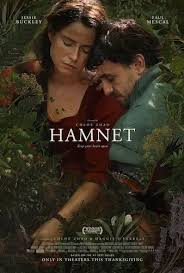
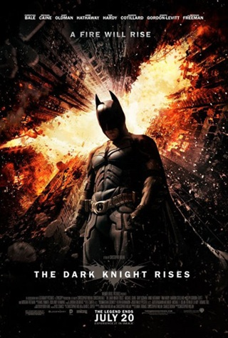

1. Hamnet (2025)

Hamnet é uma obra de arte em forma de filme, no qual é contada a história da peça famosíssima "Hamlet", conduzida por Shakespare, que foi motivada pela morte de seu filho Hamnet, desenvolvendo as diferentes formas de se lidar com o luto. O filme é extremamente pensado em cada detalhe, como o relacionamento de quase o enredo todo com o conto contado por Will no começo do filme, o mito de Orfeu e Eurídice, a emblemática frase to "Ser ou não ser, eis a questão", e para mim, a peça em si, passada no filme, é a parte mais impecável, a forma como o ator da peça interpreta Hamnet é muito forte, sendo a melhor parte o "The rest is silence". Oscar merecidíssimo para a Jessie Buckley, e acredito que deveria ter ganhado melhor filme também.
Omelete: Resenha de "Hamnet" por Alexandre Almeida2. A Lista de Schindler (1993)

A Lista de Schinler, no meu ver, é o filme mais forte que eu já vi na vida, no qual mostra a realidade da Segunda Guerra vivida na Alemanha, onde judeus, como já é de grande conhecimento, eram tratados de uma forma bem radical. Schindler é mostrado como nazista no começo do filme, o qual aparentava apoiar as causas, mas no desenvolver, se vê que existe humanidade dentro de Oskar, e a parte masi marcante para mim é quando ele consegue salvar todos os seus empregados, e cai nos prantos pensando que poderia ter salvado mais ainda. Além disso, a cena mais comentada com certeza é a da menina que aparece com um vestido vermelho, em um universo totalmente preto e branco, mostrando a inocência das crianças naquele ambiente, e mostrando que apesar de tudo, existia humanidade dentro de uma sociedade tão judiada.
Omelete: Resenha de "A lista de Schindler" por Camie Guimarães3. Batman: O Cavaleiro das Trevas Ressurge (2012)

Christian Bale, que é o meu ator favorito, é muito conhecido por ter interpretado o Batman na trilogia dirigida por Cristopher Nolan. Dos três filmes, sempre o mais comentado é o Cavaleiro das Trevas, que sem sombras de dúvidas, é um baita filme. Mas o Ressurge mexe muito com o meu sentimental, visto que o primeiro e o segundo filme constroem uma relação de afeto com o Bruce Wayne, e vê-lo partir na cena final é muito difícil. Tirando o final, que para mim, é impecável, há muitas cenas marcantes no filme, como a parte que Bruce sai do buraco, com todos gritando "Rise", que meu irmão repetiu mil vezes na TV.
Omelete: Resenha de "Batman: O Caveleiro das Trevas Ressurge" por Marcelo ForlaniOutras críticas feitas por mim
- Top 3 - Melhores Filmes de Romance
- Top 3 - Melhores Filmes por Diretor
- Top 3 - Melhores Filmes lançados em 2026 até agora